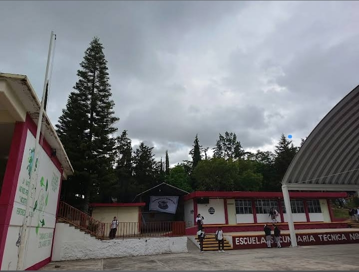
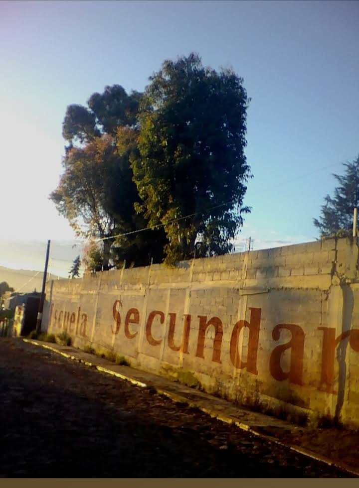
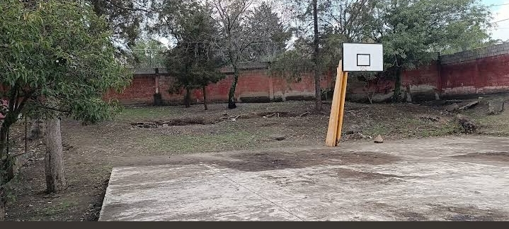
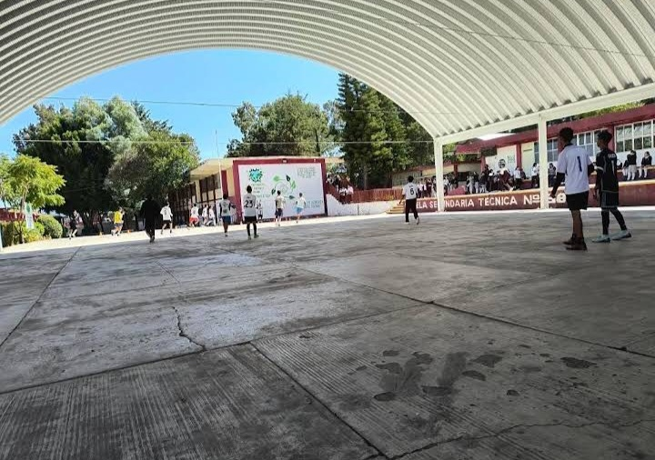

La Escuela Secundaria Técnica No. 38 es una institución comprometida con la formación académica, deportiva y cultural de sus estudiantes. Sus instalaciones ofrecen espacios adecuados para el aprendizaje, la convivencia y la realización de actividades recreativas que fortalecen el desarrollo integral de la comunidad escolar.

Esta imagen muestra una vista general de las instalaciones de la institución, donde se pueden observar algunas de las áreas que forman parte de la vida escolar diaria.

El exterior de la escuela representa la identidad de nuestra institución y es uno de los espacios más reconocidos por estudiantes, docentes y visitantes.

Espacio destinado a la práctica deportiva y a las actividades de educación física, promoviendo hábitos saludables y el trabajo en equipo.

Área utilizada para actividades deportivas, recreativas, eventos escolares y ceremonias organizadas por la institución durante el ciclo escolar.